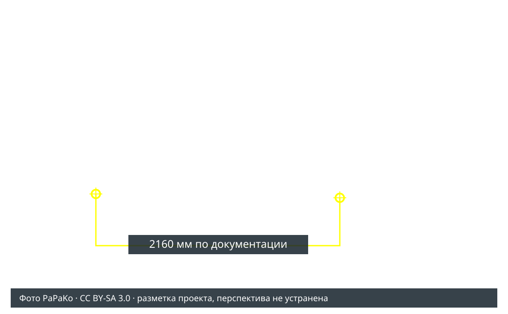
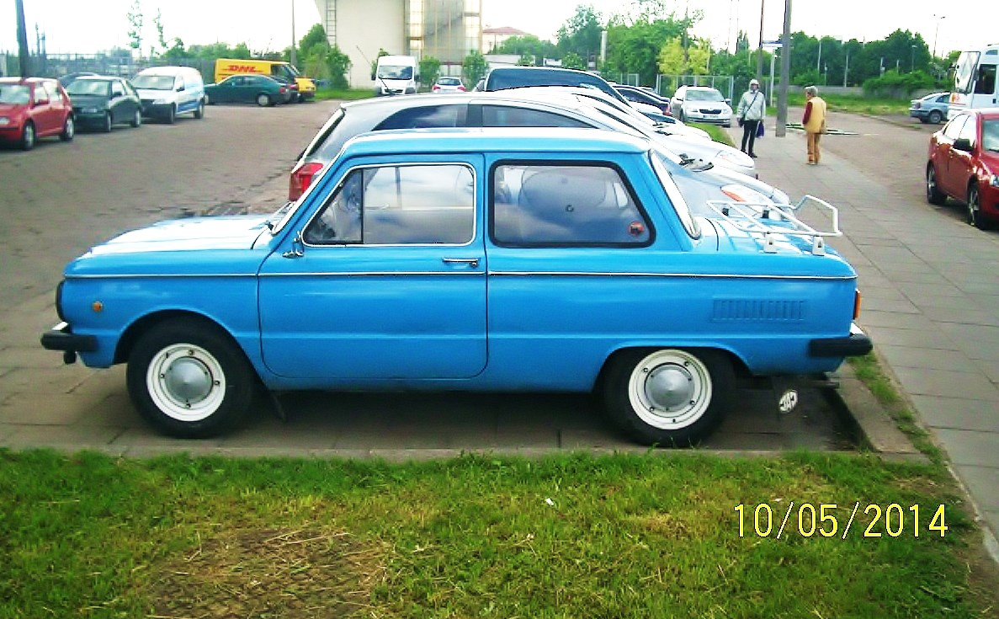
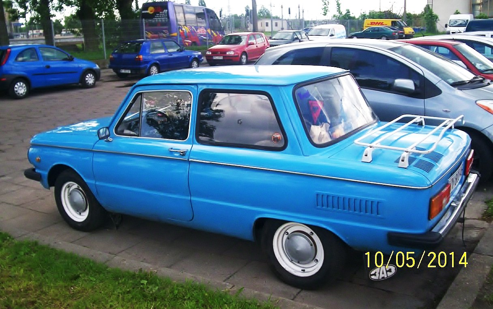
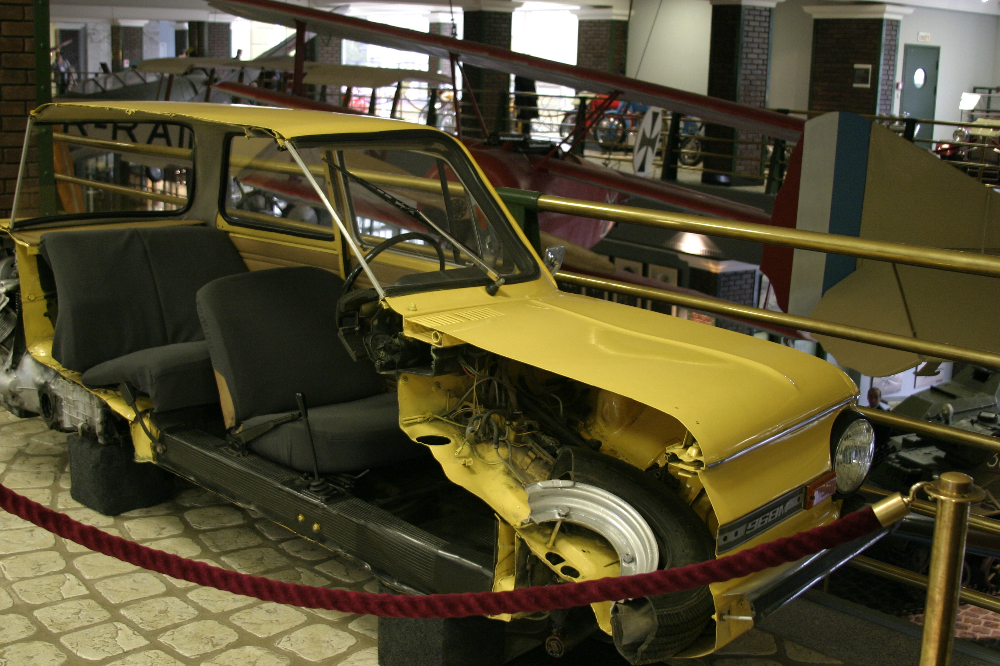
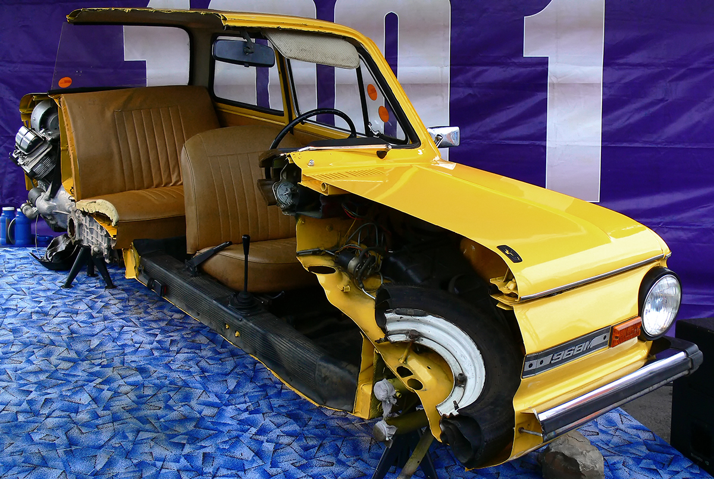
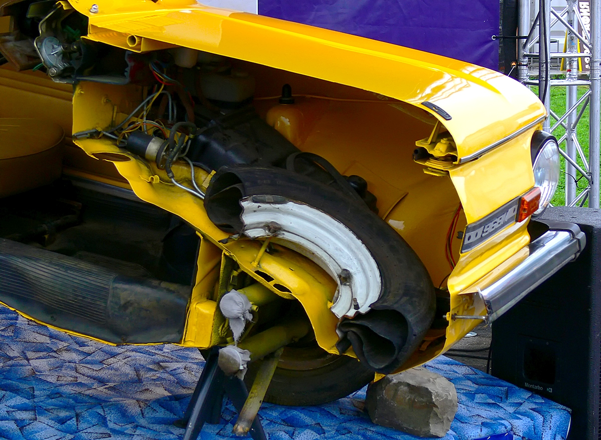
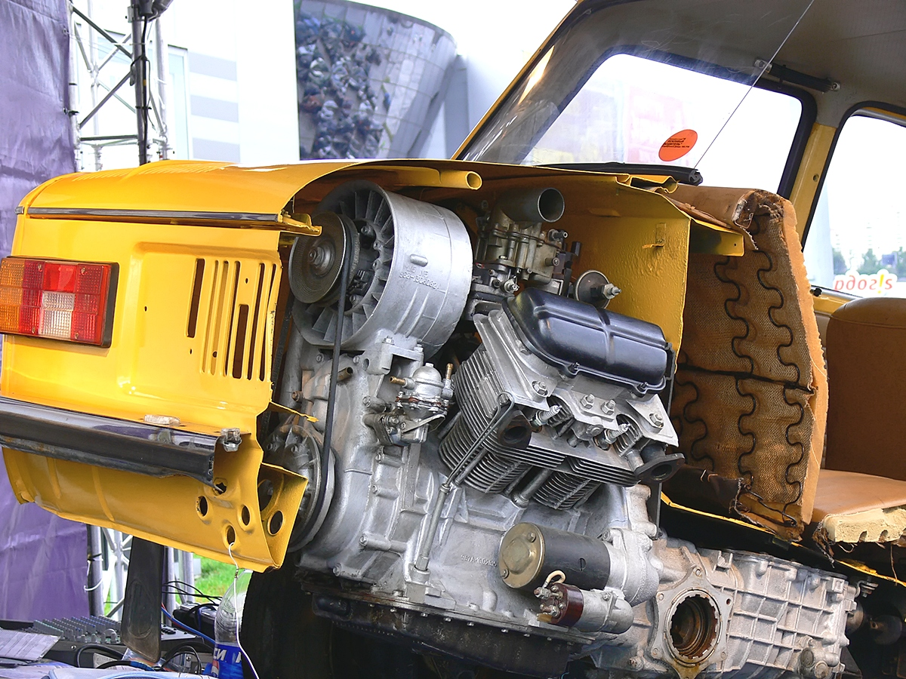

Кузов, который можно разобрать в 3D.
Версия 3: усилена кривизна крыши, добавлены переходы к рамкам, округлены края капотов и углы панелей; задняя наружная арка сделана более плоской сверху по фото. Наружная форма восстановлена по фотографиям, база и ширина заданы по документации. Внутренние зоны построены по снимкам музейного разреза. Это параметрическая реконструкция для предварительной компоновки; точность реального кузова не установлена.
35 раздельных узлов · 3765 × 1490 × 1400 мм · база 2160 мм. GLB: метры, Y вверх. OBJ: миллиметры, Z вверх; скачайте также MTL. В браузере модель автоматически ориентирована по осям проекта.
Снимки разных автомобилей и музейного разреза не образуют фотограмметрическую съёмку. В них нет общих масштабных мишеней, известных камер и полного покрытия внутренних поверхностей. Поэтому наружный габарит можно задать, а действительные просветы, толщины, крепления и точность восстановления — пока нельзя.
Как использовать для нашего проекта
Новая расстановка агрегатов, чертёж и сравнение пересечений →. Она открывается по умолчанию и предусматривает удаление заднего сиденья.
- Откройте сборку: кузов уже совмещён с заводским насосом и целевыми габаритами остальных агрегатов.
- В «Панели кузова» выберите «Открытые отсеки» или «Пол, перегородки и ниши». Отдельные узлы отключаются ниже в «Видимость узлов кузова».
- Используйте срезы X/Y/Z, измерение двух точек и проверку пересечений. Обнаруженный конфликт относится к гипотетической поверхности модели; отсутствие конфликта не подтверждает посадку в настоящем автомобиле.
- Для варианта с генератором вместо заднего сиденья отключите заднее сиденье и проверьте перегородку отдельно. Неподвижные колёса служат ориентиром; ход подвески и поворот передних колёс не восстановлены.
Модель не содержит измеренных толщин металла и достоверных креплений. По её объёму нельзя рассчитывать массу или прочность кузова. Штатный двигатель исключён; форма сохранённой КПП пока условная.
Штатная подвеска в сборке
Отдельный слой содержит 50 узлов: передние торсионы и трубы, рычаги, кулаки, дополнительные пружины и амортизаторы; задние сварные рычаги, сайлент-блоки, пружины и амортизаторы. Показаны также ступицы, барабаны и полуоси. Подвеска остаётся штатной в текущей концепции; её пригодность под новую массу не подтверждена.
Схема сверена с альбомом 1991, листы 44–50 и каталогом, рис.39–43. Координаты креплений и размеры деталей — явно перечисленные гипотезы. Заданные база и колеи подтверждены документацией. Подвеска закреплена относительно колёс; в интерфейсе можно отключать её отдельные узлы и делать общие срезы.
Подвеска GLB ↓ · OBJ ↓ · MTL ↓ · Все параметры и ограничения →
Общий передний ход 150 мм приведён в альбоме для состояния при сбитом буфере. Это не доказательство симметричного хода ±75 мм вокруг позы модели: огибающие движения ещё не восстановлены.
Силуэт и привязка осей


Формула: s = B / √[(u₂ − u₁)² + (v₂ − v₁)²].
Подстановка: s = 2160 / sqrt(570² + 9²) = 3.789 мм/px.
Формула переднего свеса: a = −s · [(u₀ − u₁)Δu + (v₀ − v₁)Δv] / √(Δu² + Δv²).
Подстановка: a = −3,789 · [(49 − 224) · 570 + (403 − 454) · 9] / √(570² + 9²) ≈ 666 мм. В модель принято 675 мм с округлением до 25 мм. Здесь индекс 0 — передний бампер, 1/2 — центры колёс.
Проекция полной длины даёт ≈3743 мм против 3765 мм в документации. Это диагностическое сравнение одного снимка; расхождение не является погрешностью 3D. В прежнем эскизе оси приняты X=800/2960 мм; в реконструкции — X=675/2835 мм. Разница 125 мм требует обмера G01. Координаты прежних агрегатов и расчёт осевых нагрузок автоматически не пересчитывались.
Что задано, а что оценено
Документированные размеры относятся к модели автомобиля, а не к обмеру вашего экземпляра. Альбом указывает высоту 1370 мм с нагрузкой; в сцене сохранён справочный габарит проекта 1400 мм. Эти два состояния не смешиваются.
| Параметр | Принято, мм | Основание | Комментарий |
|---|---|---|---|
| Длина | 3 765 | Документация | Наружная длина с бамперами; ограничение модели |
| Ширина | 1 490 | Документация | Наружная ширина; не внутренний просвет |
| Высота сцены | 1 400 | Габарит проекта | Справочный габарит проекта. Альбом 1991: 1370 мм с нагрузкой; высота по фото зависит от подвески. В модели приняты 1400 мм, не обмер. |
| Высота с нагрузкой | 1 370 | Документация | Высота с нагрузкой в таблице альбома; не смешивать с ненагруженным состоянием |
| Колёсная база | 2 160 | Документация | Расстояние между осями; ограничение модели |
| Передняя колея | 1 228 | Документация | Колея передних колёс |
| Задняя колея | 1 212 | Документация | Колея задних колёс |
| Передняя ось X | 675 | Оценка по фото | Оценка переднего свеса округлена до 25 мм; в прежнем layout.json X=800 условно. Не заводской размер. |
| Радиус колеса | 280 | Допущение проекта | Статический радиус согласован с расчётным R=0,28 м; деформация, фактический размер шины и ход подвески не восстановлены. |
| Радиус арки | 325 | Оценка по фото | Упрощённый статический профиль арки; не оболочка движения колеса |
| Пол салона Z | 300 | Внутренняя гипотеза | Уровень пола из анатомии разреза; без масштабной линейки и обмеров |
| Задняя перегородка X | 2 780 | Внутренняя гипотеза | Наклонная перегородка за задним сиденьем; координаты не измерены |
| Внутренняя ниша |Y| | 465 | Внутренняя гипотеза | Граница внутренней ниши по ширине; перспективный разрез не задаёт просвет |
Назначенные диапазоны exploratory_variation_mm в JSON нужны для исследования чувствительности. Они не являются измеренной погрешностью или допуском на изготовление. Остальные координаты формы — упрощения в генераторе, а не дополнительные заводские размеры.
Кузов и внутренние зоны
Фотографии сохранены без изменений. Музейный автомобиль разрезан для экспозиции: его анатомия помогает понять расположение панелей, но не подтверждает геометрию неповреждённого кузова. Упрощённая модель основана на всех шести снимках ниже.

PaPaKo · CC BY-SA 3.0
Страница автора и оригинал ↗

PaPaKo · CC BY-SA 3.0
Страница автора и оригинал ↗

Ralf Smallkaa · CC BY 2.0
Страница автора и оригинал ↗

Aleksandr Markin · CC BY-SA 2.0
Страница автора и оригинал ↗

Aleksandr Markin · CC BY-SA 2.0
Страница автора и оригинал ↗

Aleksandr Markin · CC BY-SA 2.0
Страница автора и оригинал ↗
Авторы, лицензии и внесённые изменения →. Производная реконструкция опубликована под CC BY-SA 3.0.
Какие данные ещё нужны
Нужны передний свес, поперечные сечения переднего и заднего отсеков, пол и перегородки в общей системе координат, оболочки движения подвески, фланец КПП и точки крепления. Они остаются «НЕ УСТАНОВЛЕНО» в ведомости обмеров. При наличии размеров параметры реконструкции можно исправить и заново собрать модель.
Для восстановления по съёмке требуется серия перекрывающихся кадров одного автомобиля с масштабными мишенями: наружный кузов, каждый открытый отсек и салон. Закрытые поверхности и толщины потребуют отдельного обмера или скана.
Воспроизведение: измените models/zaz-968m-reconstruction.json, выполните python3 build_reconstruction.py, затем python3 build_site.py. Скрипт проверяет заданный габарит и базу; эти проверки подтверждают построение сетки, а не точность реального кузова.
Техническая документация
Шейнин, Стрюк. Альбом ЗАЗ-968М, 1991 ↗ · Каталог деталей ЗАЗ-968М ↗. Каталог помогает определить состав панелей; его взрывные схемы не являются масштабными обмерными чертежами.